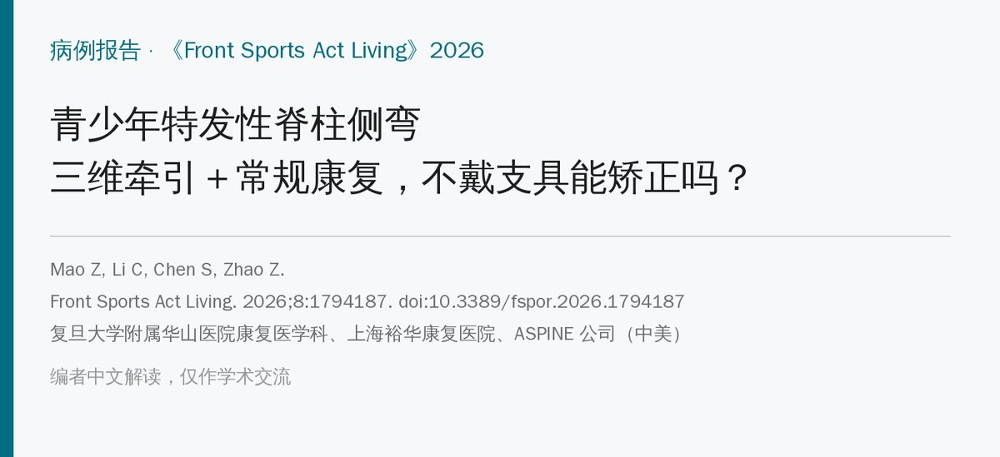
🔖原文信息（编者中文重排）
📚 文献信息
▪ Mao Z, Li C, Chen S, Zhao Z. Integration of three-dimensional spinal traction and conventional rehabilitation for structural correction in adolescent idiopathic scoliosis: a case report. Front Sports Act Living. 2026;8:1794187. doi:10.3389/fspor.2026.1794187
▪ 作者单位：ASPINE 旭阳医生集团（上海）、上海裕华康复医院、复旦大学附属华山医院康复医学科、ASPINE Health Group（美国）
▪ 文章类型：病例报告（1 例，32 周）
• 12 岁女孩，S 形侧弯：胸段右凸 22°、腰段左凸 40°，伴腰痛；戴支具夜间不适、依从性差，也不想手术
• 采用基于姿势的脊柱康复（PSR）：先骨盆、再胸腰，结合重力三维牵引、镜像训练、核心训练和脊柱手法，32 周共 50 次
• 结果：腰段 Cobb 角 40° → 23°，旋转角 27° → 15°，腰痛 VAS 4 → 2
• 但只有 1 例、没有对照，测量软件和治疗体系都来自作者所在公司；作者也强调支具仍是基石，本方案只是补充
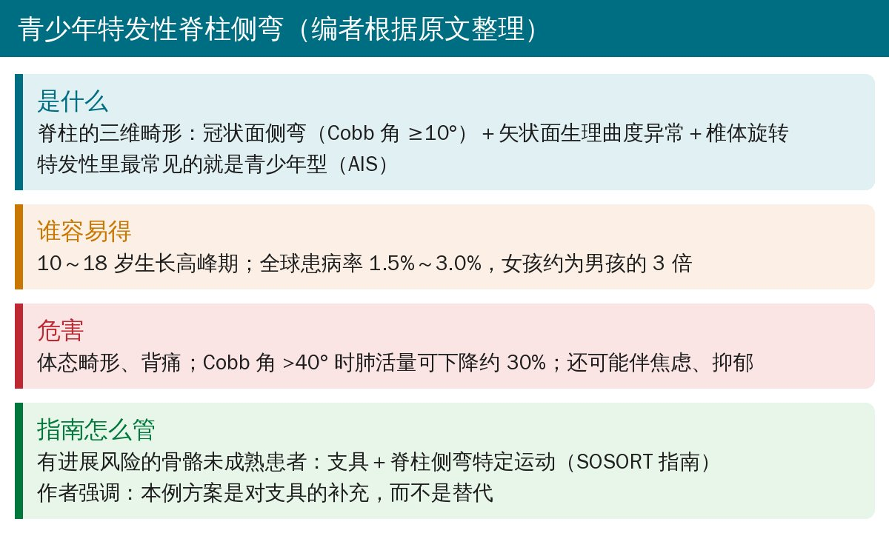
🔖青少年特发性脊柱侧弯（编者根据原文整理）
按照 SOSORT 指南，有进展风险、骨骼尚未成熟的患者，标准做法是支具＋脊柱侧弯特定运动。但现实中，不少孩子因为不适、睡眠受影响或活动需求，戴不够规定的时间。这篇病例想回答的是：戴不了支具时，还能做些什么。
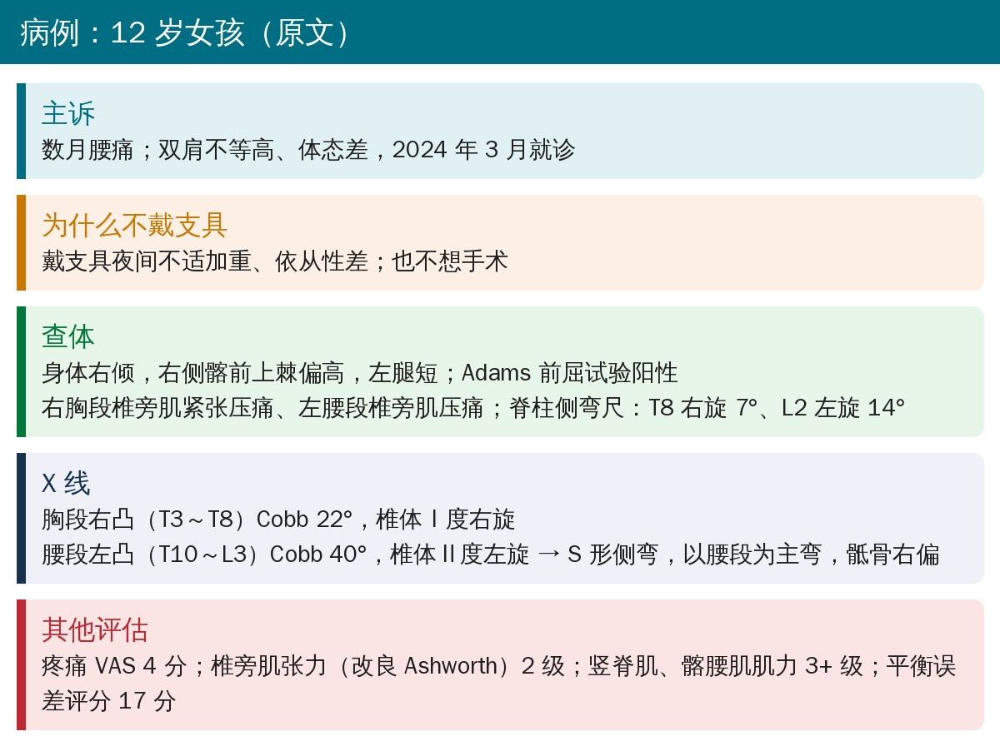
🔖病例资料（据原文整理）
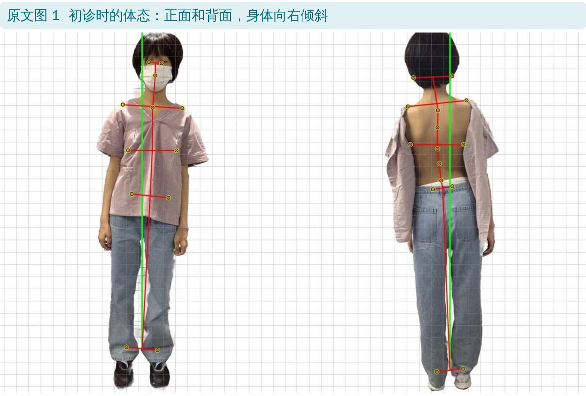
🔖原文图 1：初诊体态
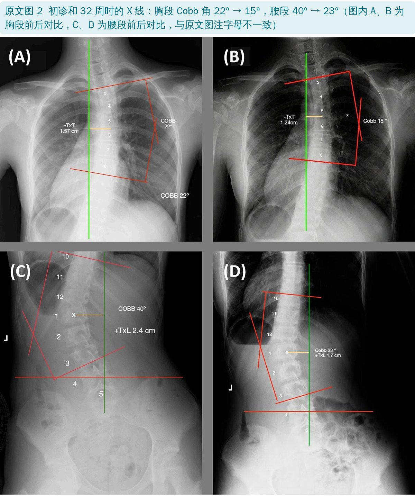
🔖原文图 2：初诊和 32 周时的 X 线
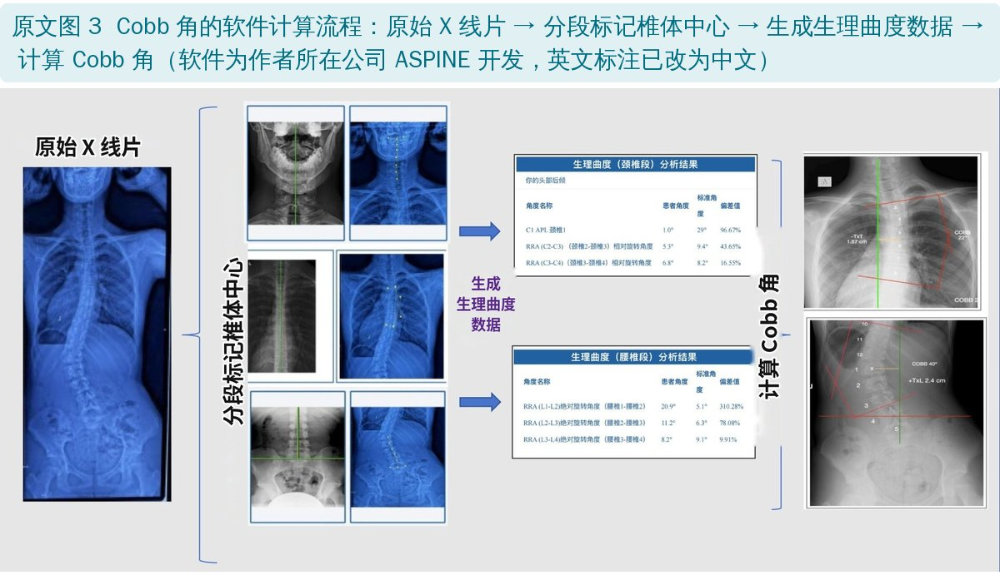
🔖原文图 3：软件计算 Cobb 角的流程
Cobb 角同时用了两种方法：作者公司的 AI 辅助软件（用 3000～4000 张侧弯 X 线训练，标记椎体中点后自动计算）和人工测量。原文说明软件结果在用于临床解读前，需要医生核对。
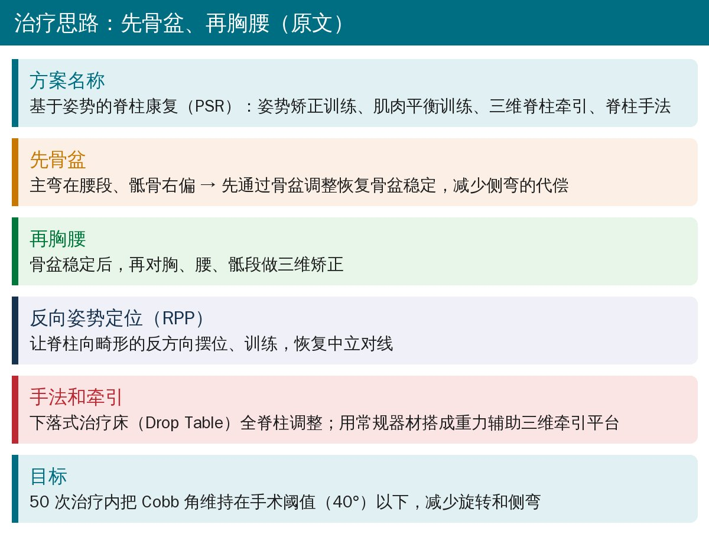
🔖治疗思路（据原文整理）
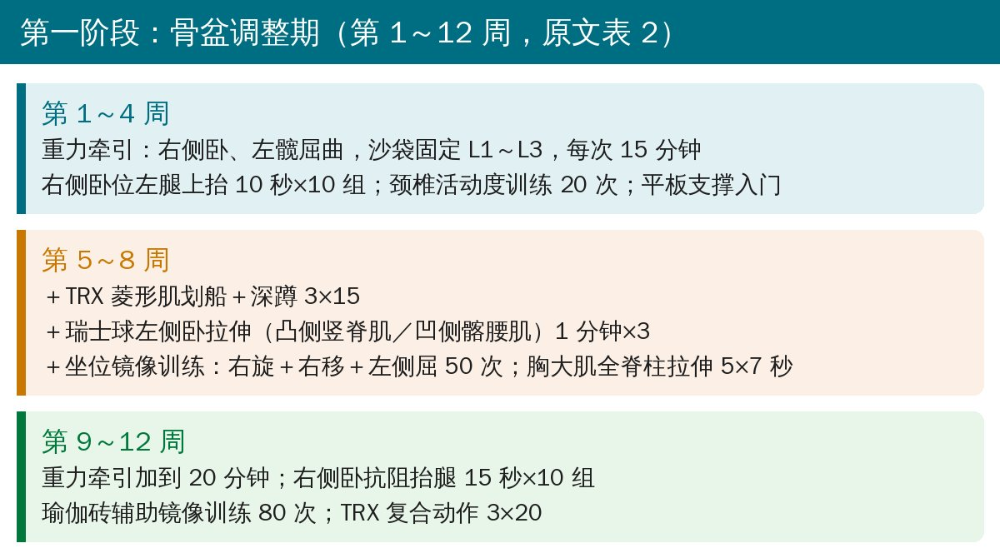
🔖第一阶段（据原文表 2 整理）
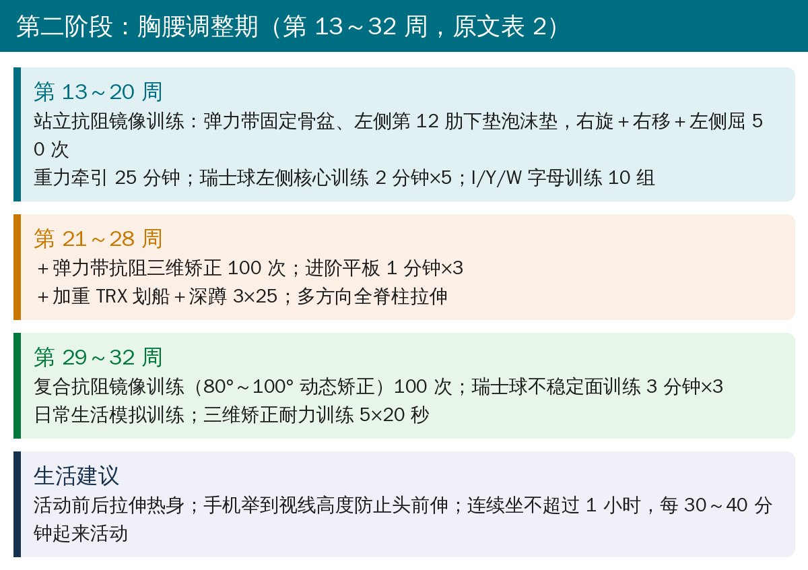
🔖第二阶段（据原文表 2 整理）
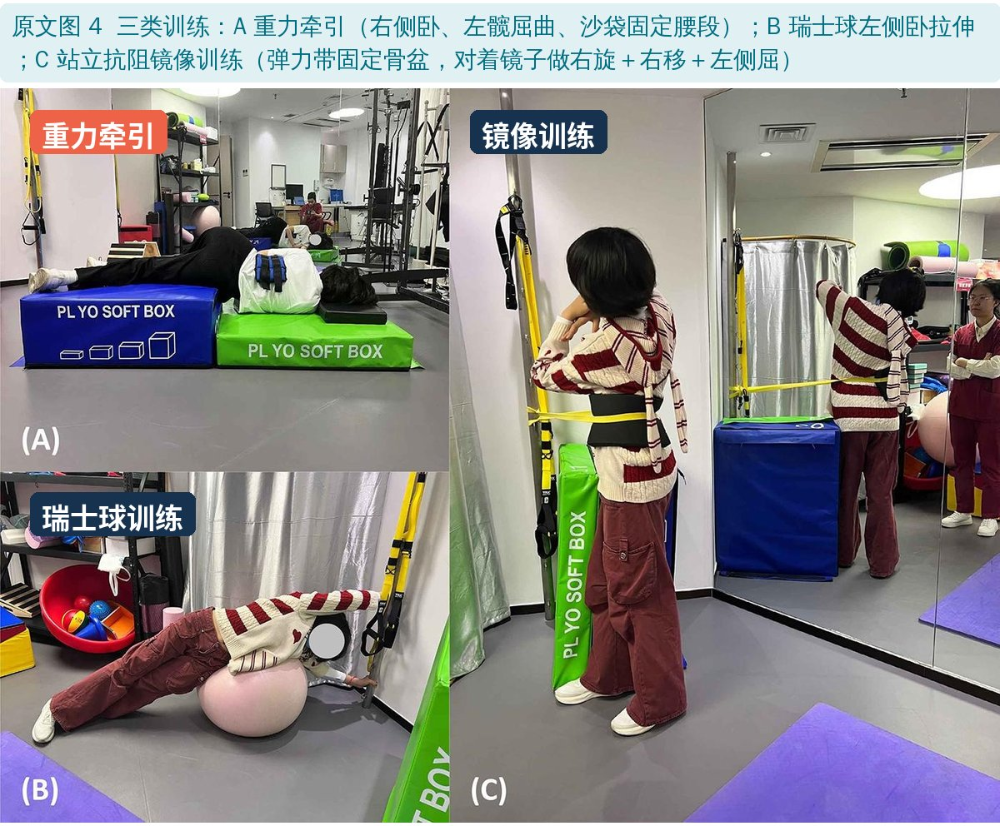
🔖原文图 4：三类训练
重力牵引的设计：右侧卧（凸侧在下）、左髋屈曲，用沙袋固定 L1～L3，目的是通过轴向牵引减少腰段旋转应力；左髋屈曲位让右侧髂腰肌做离心收缩，帮助恢复骨盆对称。镜像训练的核心动作是右旋＋右移＋左侧屈，后期加弹力带固定骨盆、泡沫垫限制非目标节段。
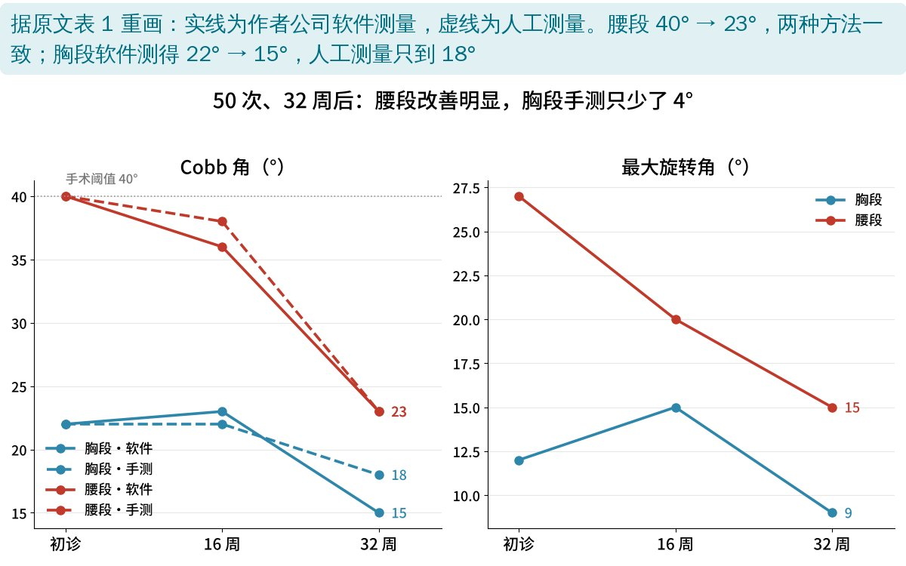
🔖Cobb 角和旋转角变化（据原文表 1 重画）
原文表 1：三个时间点的评估结果
| 指标 | 初诊 | 16 周 | 32 周 |
|---|---|---|---|
| 疼痛 VAS | 4 | 3 | 2（运动时最高 3） |
| 椎旁肌张力（改良 Ashworth） | 2 | 2 | 1+ |
| 竖脊肌、髂腰肌肌力（MMT） | 3+ | 4 | 4+ |
| 平衡误差评分（BESS，越低越好） | 17 | 15 | 11 |
| Cobb 角·软件（胸／腰） | 22° / 40° | 23° / 36° | 15° / 23° |
| Cobb 角·人工（胸／腰） | 22° / 40° | 22° / 38° | 18° / 23° |
| 最大旋转角（胸／腰） | 12° / 27° | 15° / 20° | 9° / 15° |
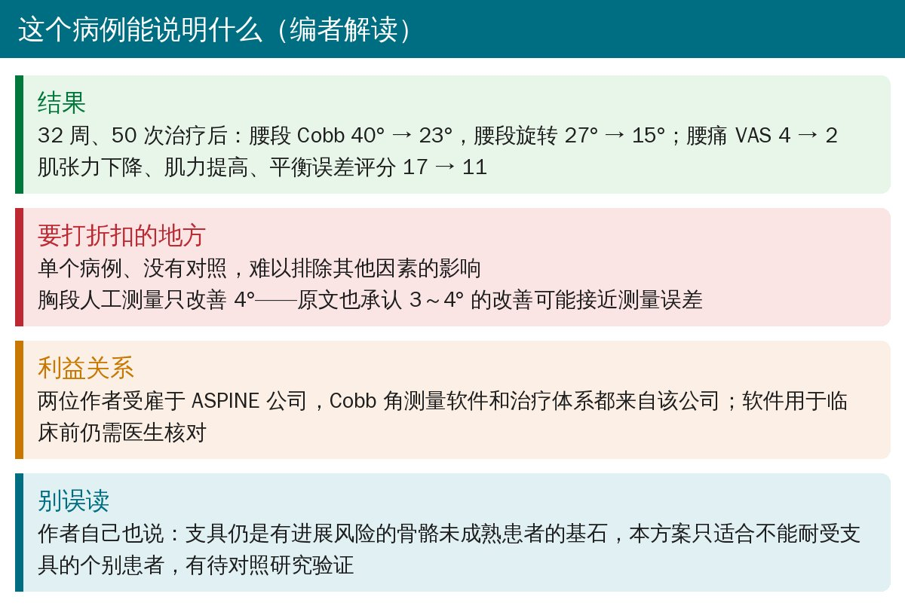
🔖编者解读
• 单个病例、没有对照；PSR、牵引、手法、多种训练同时使用，无法分辨哪一项起作用
• 胸段人工测量只改善 4°（22° → 18°），原文也承认 3～4° 的改善可能接近测量误差；腰段的改善两种方法一致，更可信
• 两位作者受雇于 ASPINE 公司，评估软件和治疗体系都出自该公司；50 次治疗的时间和经济成本也不低
• 摘要写“右凸胸腰段侧弯，Cobb 40°”，正文影像是胸段右凸 22°＋腰段左凸 40° 的 S 形侧弯
• 图 2 图注说 B 是初诊腰段 40°、C 是 32 周胸段 15°，图内实际是 B 为胸段 15°、C 为腰段 40°
• MI 训练在图 4 图注里是镜像训练（Mirror Image），讨论里却写成运动想象（Motor Imagery）
• 有进展风险的骨骼未成熟 AIS 患者，首选仍是支具＋特定运动；本例方案只适合确实无法耐受支具的个别患者
• 可借鉴的思路：先评估骨盆和腿长，以主弯为重点；牵引、镜像训练都按“凸侧—凹侧”设计方向
• 疗效判断以 X 线 Cobb 角为准，几度以内的变化要考虑测量误差；定期复查，进展时及时转诊
• 生活上：活动前后拉伸，手机举到视线高度，连续坐不超过 1 小时
欢迎关注骨科康复小黄公众号，获取更多物理治疗的专业知识！
📄参考文献：
Mao Z, Li C, Chen S, Zhao Z. Integration of three-dimensional spinal traction and conventional rehabilitation for structural correction in adolescent idiopathic scoliosis: a case report. Front Sports Act Living. 2026;8:1794187. doi:10.3389/fspor.2026.1794187
原文以知识共享署名 4.0（CC BY 4.0）协议开放获取。原文图 1～4 引自原文，图 3 的英文标注改为中文、图 4 加了中文标签；结果图由编者根据原文表 1 重画；整理卡为编者根据原文撰写。